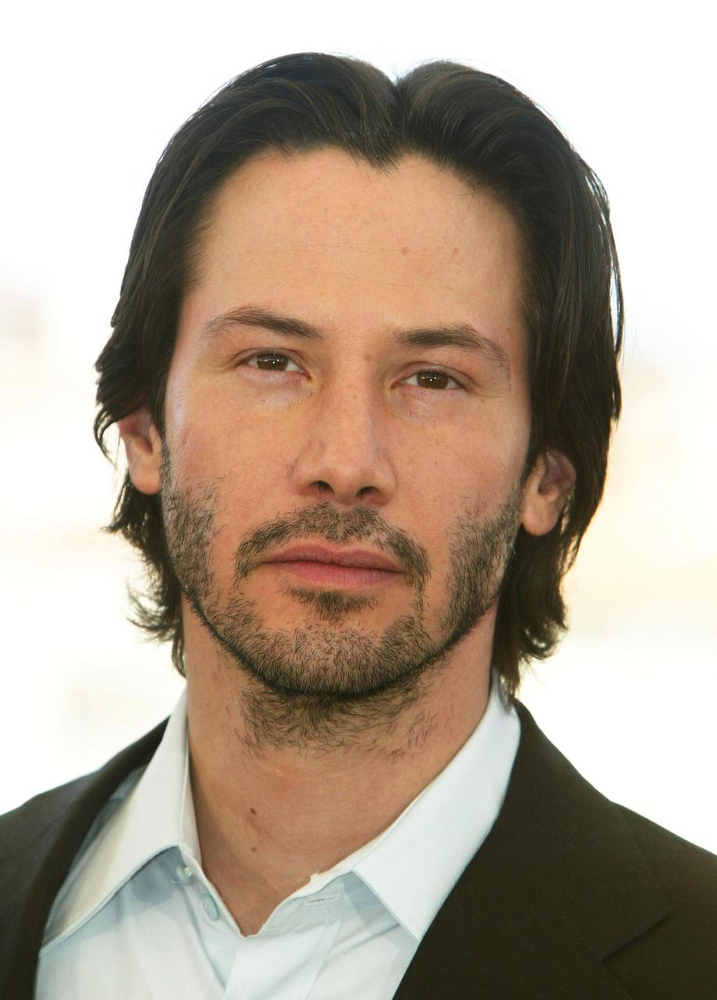

Кіану Рівз (англ. Keanu Reeves, нар. 2 вересня 1964, Бейрут, Ліван) — канадський актор, режисер, продюсер і музикант. Здобув популярність за виконання головних ролей у декількох блокбастерах, включаючи комедійну франшизу про Білла і Теда (1989, 1991, 2020); трилер «На гребені хвилі» (1991), культовий бойовик «Швидкість» (1994) та «Джон Уік» (2014); психологічний трилер «Адвокат Диявола» (1997).
